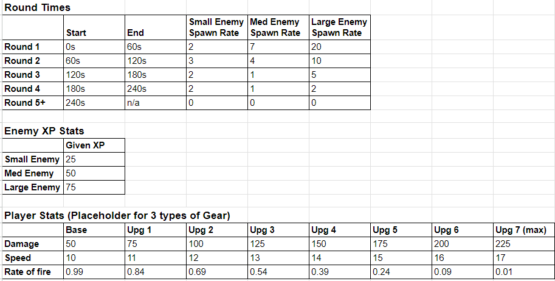

Beeranged

Role: Solo project
Genre: 2D Shooter, Survivor-like
Engine: Unity
Platform: PC
Upgrade your player by defeating bees and levelling up. Pick the upgrades that suit you! Can you make it to the end and defeat the queen bee?
Overview
The game started as an Excel spreadsheet for a project balancing economies in a game. The goal was to experiment with dynamically scaling enemies and player stats. What started as a number sheet evolved into an entire game.Here’s the brief:
The game I made was just a prototype of Beeranged, it’s missing a lot of the features and mechanics described in the GDD such as the item list, pet bee and breeding function. Here is the game design document I created for the game.
Open GDD here!
Economic prototype
This project was a test to see how I could have a manually changing numbers in a game along with numbers increasing over time and keeping this balanced. Initially, I planned to create a tower defence game with spawning enemies, money systems, and upgrades. However, I wanted a bigger challenge and decided to focus on dynamic scaling enemies. At the time, I had just started playing Vampire Survivors, which inspired me to create a similar prototype. The first version wasn’t a game at all—it was just an Excel sheet. I used it to experiment with player and enemy stats scaling over time and while it was useful, it didn’t feel satisfying. I made the decision to expand and moved on to building a real game.Here are the graphs from the sheet:

Player stats & enemy scaling
The spreadsheet I initially made was pretty lacklustre as I was quickly finishing it up. I wasn’t testing it in a real scenario and was getting bored with it, so before I could even fully flesh the spreadsheet out, I decided to make it into a real game. I refined the relevant info into a document once I made the game and used it for testing, all the relevant information about the numbers and testing with results can be found here:Open Testing Doc here!
Keeping the game on theme
I initially wanted the game to be called “Deranged” but after a fun typo “Beeranged” was born. I decided to stick with the bee theme as I already had the game concept made, so I only had to flesh it out, now with a fun twist. Beekeeper gear replaced traditional armor and all the items were bee-themed. Having a unique theme like this is something I’ll use again while designing future projects to give them that extra bit of flare.After getting the GDD reviewed, I received feedback suggesting to change the theme towards catching bees and giving educational tips about them instead of defeating. While I agreed this was a more ethical approach, I didn’t have time to implement these changes fully during development so they were cut. Later, I revisited the project with the intent to add these educational elements but decided to focus on releasing the game on Itch.io rather than the original target of mobile platforms (which had a younger audience, hence the feedback).
Learning C#
This was one of the first solo projects I had undertaken, so a massive hurdle I had to eventually tackle was C#. I had done basics in C# but mostly bools and storing variables. I knew I could’ve kept it simple, but I saw this as an opportunity to improve my programming skills.With the help of tutorials and resources like W3Schools, I spent a week improving my understanding of C#. I created:
- A player movement script.
- A stats script handling damage, speed, health, and firing speed.
- A shooting script that instantiates bullets toward the mouse cursor over time.
- A damage system that allows bullets to damage and destroy enemies.
- Enemy spawning logic for varied locations.
- Additional systems for health packs and other features.
I had written scripts using other logic before in c# but I wasn’t sure what I was even writing, it was mostly blindly following tutorials and the unity API. This time I understood everything I was writing, and I learned a huge fundamental concept that would make my games infinitely better, scripts communicating with each other. This is such a core concept now reflecting on it, but I was going in as a C# first-timer. For example, my enemy stats script dynamically changes based on other game events. This ability to link scripts saved time and added flexibility and so much room for expansion to the game.
Beeranged first prototype
Learning Aesprite
At the start of the project, all the enemies and objects (excluding a rough player drawing) were just the default unity shapes. I had little experience with game art and didn’t give it much thought during early development. A few months after I finished the project, inspired by childhood attempts at pixel art in MS Paint, I purchased Aseprite and started playing around with sprite art, leading to me making proper sprites for Beeranged.I quickly learned that pixel art was harder than expected, but after a week of practice, I created sprites for the player and all the enemies. One challenge was handling overlapping colours, like bee wings over bodies. Lowering the alpha on the brush tool was an awesome solution I discovered, which made blending these colours easy.
In the future, I plan to invest in a drawing tablet to level up my art skills, but for now, I’m happy working with a mouse and simple sprites. I will continue updating this project with new art and im excited to see my progression through devlogs! Here are some of the sprites I made:
Audio & Soundtrack
Like art, I had zero audio in the game whatsoever when I finished the first version. Returning to this, I hopped into Audacity again now with much more experience, visited the Soundsnap library (licensed) and got to work. Making the sound effects was easy, what I wanted to focus on was the soundtrack. In previous projects, I always felt the soundtrack didn't fit as I would find free-to-use songs that were not designed to fit my games. I took a different approach to Beeranged. Instead of using generic royalty-free tracks, I found three looping drum tracks that flowed into one another, each more intense than the last. This reflected the game’s increasing in difficulty over time and was perfect.Here are the drum loops:
Takeaways
Spreadsheets
Reflecting on my spreadsheet, I wish i did more on it, having scripts inside Excel that could’ve allowed me to automatically test more scenario. Hopefully, i’ll revisit it in the future one day for this project.Theme matters
A unique overarching theme may be difficult to keep consistent however it adds character to a game.One door closing opens another
Sometimes proposed changes don’t make it into the final version, but they can inspire new ideas and improvements.C#
C# is an extremely powerful language that I underestimated, and now I am setting aside more time every week to learning more of it. Being able to call functions from other scripts is such a huge game changer (literally), and there’s more simple things like this I still don’t know that i’m keen to discover.Sprite work
is a lot of fun and an easy way to whip up quick art, especially in a program like Aesprite. I learned that in general, in all new applications I use, I should delve into tutorials and research tools as they can do some incredible things that aren't obvious at first glance. I didn’t use any tutorials for Aesprite, however, I may have found what I was looking for quicker if I didLess is more
A simple small thing if done right can be used to make something great, for example, me discovering short drum patterns that can loop to create a dynamic soundtrack (I will be using this again for sure!)Revisting a project
Beeranged was a project I recently revisited, I’ve learned that revisiting something is a great way to gain a different perspective on things and can be incredibly inspiring. I plan on revisiting this game again in late 2024, and again in 2025, reinventing a new title based of Beeranged, having the same core gameplay with new and improved mechanics, visuals and programming.Beeranged started as a simple experiment and grew into a full game. Revisiting it taught me the value of iteration, reflection and simplicity. I’m excited to see how this project evolves in the future and what new challenges and skills it will bring to me.
Thanks for reading! If you want to download the game or see more of the game check out the itch page below :)